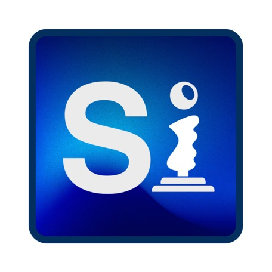

Say Hello to Silicium!

Silicium is my new Qt-based emulator suite, and the long-term successor to both VirtualC64 and vAmiga. Commodore 64 and Amiga virtual machines are unified in a single, cross-platform library. Development began with the C64 side; Amiga support follows once the C64 backend has completed alpha testing.
Every emulated computer is stored as a self-contained virtual machine bundle in your library, with support for snapshots and workspace hibernation. Eventually, the standalone VirtualC64 and vAmiga applications will adopt the same document format, allowing virtual machines to be exchanged seamlessly between all three applications.
All Cocoa-specific code is being replaced by a platform-independent foundation: the interface is built with Qt, and SDL3 provides game controller support. macOS remains the primary development platform for now, but the codebase is designed to compile on Linux and Windows with minimal adjustments.